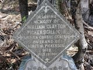
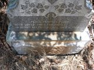
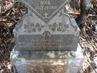
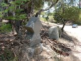

|
|
Mount Tamalpais Mortuary Cemetery San Rafael, Marin County, California William Clayton Pickersgill, C.B. Anges Merrington Pickersgill Memory of William Clayton Pickersgill, C.B. British Consul General Husband of Agnes M. Pickersgill Died July 19 1901 Peace, perfect peace, with loved ones far away? In Jesus keeping we are safe & they. Anges Merrington Pickersgill 1863-1938
William Clayton Pickersgill, C.B. (Companion of the Order of The Bath) is listed on a 1922
Pacific Union Club, San Francisco, “In Memoriam” page. As British Consul General
in San Francisco, he would have been high society, hence the Pacific Union Club membership. The question is, why would he have been buried in San Rafael? In 1901, San Rafael would have been a sleepy hamlet. Back then, ferryboats connected San Francisco to Marin County, there were no bridges making the connection. The first bridge to Marin County did not open until 1937. Marin County was rural, farm goods flowed from Marin farms to Sausalito via a narrow gauge railroad, then transported to San Francisco by ferry. However, some city folk with money had summer homes in Marin, while others commuted by ferry. It is possible that he had a summer house in Marin County or maybe he was a year-round commuter. Another possibility is that a cemetery outside of San Francisco was used because the removal/destruction of cemeteries in the city had already begun. Pickersgill served as British consul, Madagascar, “recalled by his Government at the request of the French Cabinet” about 1887. Seems the French arrived in Madagascar in 1883 and with some gunboat diplomacy, ultimately made Madagascar a French colony. No doubt, Pickergill riled the French into demanding his recall. After, Pickersgill was assigned to the Congo Free State (the private corporate state controlled by Belgium’s King Leopold II). In Jan 1897, Pickersgill wrote a report to the British Home Office about Leopold’s atrocities against the native people of the Congo. Roger Casement’s very important 1903 report on the Congo included Pickersgill’s 1897 report. |
|
William Clayton Pickersgill, C.B. Anges Merrington Pickersgill (Click the Image to See a Larger Version) | ||

|
 |  |
|  |  |

|
{kind=link}
{kind=link}
{kind=link}
{kind=link}